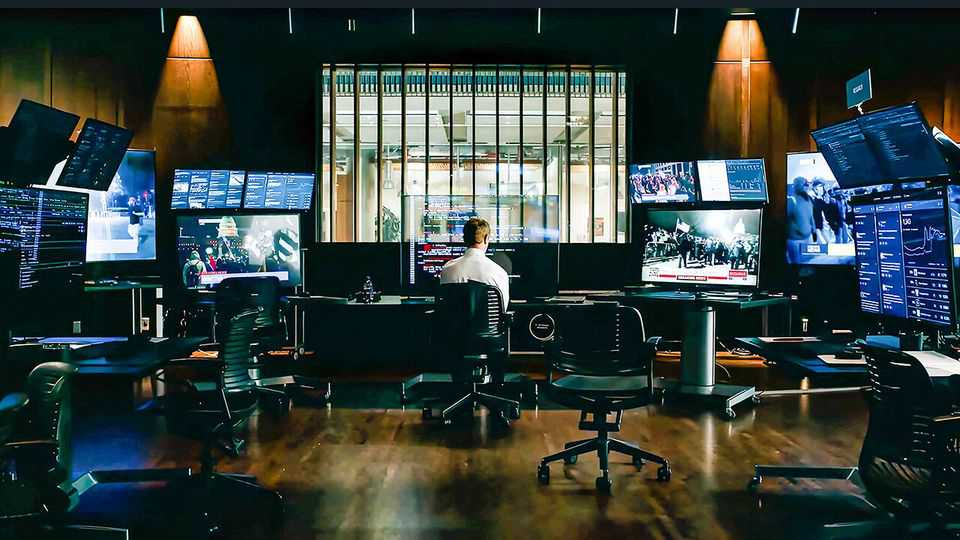

“The Social Reckoning” is a fatally earnest sequel to a classic
Facebook has become a softer target, making for a weaker satire than “The Social Network”

Oct 8th 2026
“I’m not two years out of a dorm room anymore,” snaps Mark Zuckerberg at an adviser in “The Social Reckoning”. The last time Facebook’s boss was portrayed on the big screen, a dorm is precisely where he was. “The Social Network” (2010) dramatised the company’s birth at Harvard and established Mr Zuckerberg’s reputation as a chilly, ruthless weirdo. Its epilogue noted that Facebook had 500m members and that Mr Zuckerberg was the world’s youngest billionaire. Today Facebook has 3bn users and its 42-year-old boss is worth a quarter of a trillion dollars.
“The Social Reckoning”, a much-anticipated sequel to “The Social Network”, takes place around 15 years later. It follows Jeff Horwitz, a journalist at the Wall Street Journal (played by Jeremy Allen White), as he coaxes information from Frances Haugen (Mikey Madison), a disillusioned member of Facebook’s toothless “Civic Integrity Team”. The film adopts its predecessor’s time-hopping structure, flipping between hunts for the material and publication, when all hell breaks loose.
The movies share a writer in the form of Aaron Sorkin, who won an Oscar for his “Social Network” script (which was based on a book). But there the similarities end. Mr Sorkin stood in for the original director, David Fincher. Jesse Eisenberg declined to play Mr Zuckerberg for a second time, so the role has gone to Jeremy Strong, best known for “Succession”.
The main problem with “The Social Reckoning” is not that its director or actors have changed. It is that Facebook itself has. Back in 2010 Facebook was cool. It had been available to the general public for only four years: young people were glued to it; their grandparents had not yet taken it over. Mr Zuckerberg, then 26, was Time’s person of the year. “The Social Network” was devastating because it methodically gutted the world’s hottest company and its founder (or rather, co-founder, as the film made clear).
Today’s Facebook is a mightier company but a softer target. Social networks are reviled by legislators, litigators and parents. Facebook and its rivals have paid out in multiple court cases involving harm to children. Its efforts to silence criticism—gagging a former executive who wrote a book, “Careless People”, for instance—have backfired spectacularly. Almost no one in the world is less cool than Mr Zuckerberg, whose approval rating in America is -43%, just ahead of Vladimir Putin.
The result is that “The Social Reckoning”, which styles itself as an exposé, often feels more like a sermon for the converted. Mr Strong, who is known for his extreme method-acting approach, has nailed Mr Zuckerberg’s monotone voice and stiff manner. But whereas the young Zuck of “The Social Network” was a complex character—arrogant and treacherous but tragically insecure—in the “Reckoning” he is a cartoon villain. Surrounded by computer monitors and a bulletproof sofa in his imperial headquarters, he barks at quivering underlings as they labour through their slide decks. “Fuckin’ Civic Integrity”, he scoffs, after the team meekly suggests dialling down harmful content at the expense of 1% of engagement.
His henchmen are no subtler. Facebook’s comically horrid PR man says that the social network is better than any nation. “We’re post-government around here,” he sneers, when threatened with regulation. The now-familiar notion that the company puts profit before the greater good is conveyed with a megaphone. “If engagement keeps falling…it’ll be a bad earnings report!” squeals one executive, as the company debates whether to tone down its wickedness.
The second difficulty for the movie is that its subject matter is more nuanced than Mr Sorkin would like. The film’s central question—should Facebook suppress bad content?—is not so simple. The script implies that Facebook should take down lies. But should the flawed Mr Zuckerberg therefore be elevated to a global arbiter of truth? Some dialogue is unintentionally persuasive to the contrary. “The voters aren’t children,” argues Mr Zuckerberg in one scene. “Facebook isn’t the ref…We’re the public square.” Quite.
Mr Sorkin’s earnestness was perfectly tempered by Mr Fincher’s cynicism in “The Social Network”. It was a movie with no real heroes, between the perfidious Mr Zuckerberg and those he trampled, including a flash Sean Parker (an early supporter) and the absurd Winklevoss twins (who say Mr Zuckerberg stole their idea). The “Reckoning”, by contrast, is divided neatly into goodies (diligent journalist, brave whistleblower) and baddies (scheming Zuckerberg, robotic cronies). The outcome is an unsatisfying caricature.
Film and TV schedules have lately been clogged with dramatisations of Silicon Valley. The most successful ones have tended to be those based on true stories, including what happened at Uber (“Super Pumped”), WeWork (“WeCrashed”) and Theranos (“The Dropout”). But now those corporate dramas are well-known—and helped make up people’s minds about the Valley’s recklessness.
Yet more takes are on the way. On October 8th Paramount+ will launch “Cupertino”, a series about a fictional law firm fighting big tech. A new documentary about Theranos’s Elizabeth Holmes will come out this month, too. In December “Artificial”, starring Andrew Garfield as Sam Altman, will be the first movie to tell the story of OpenAI. “The Social Network” remains the model for how to do it well. Alas, its follow-up offers a reminder of what a hard act it is to follow. ■